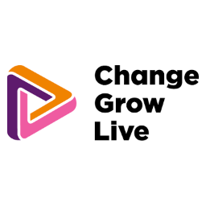
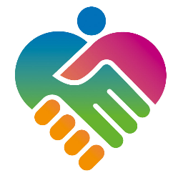
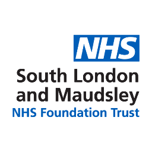
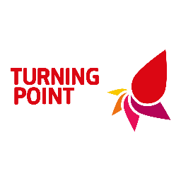

Vanessa Cieplinska
PhD student
Funded by ADR UK
Alua Yeskendir
PhD student
Funded by MHR UK

Change, Grow, Live provides a range of services to support individuals, families and communities whose lives are adversely affected by crime, substance misuse, homelessness, anti-social behaviour, domestic violence, social deprivation and lack of opportunity. The charity works with challenging service users with complex needs, including those with entrenched drug habits and offending behaviour.

North London NHS Foundation Trust provides specialist mental health and community health services for children, young people, adults and older people across North London, including support for those experiencing severe and enduring mental illness, crisis, or complex psychological and social needs.

South London and Maudsley NHS Foundation Trust provides specialist mental health and substance use services for children, young people, adults and older people, serving local communities in Croydon, Lambeth, Lewisham and Southwark as well as people referred from across the UK to its national specialist units.

Turning Point provides health and social care services for people with a learning disability and also people at risk of, or with a mental health diagnosis, mental health issues, drug or alcohol use, misuse or dependency, or other addictive behaviours.